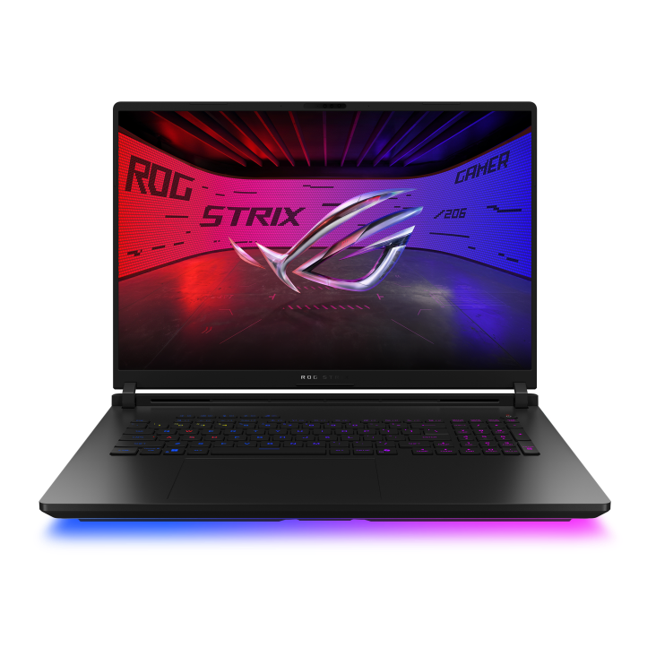

Asus ROG Strix SCAR 18 (2026) G835

Buy Now ⇎ Details
About ⇒ The ROG Strix SCAR 18 (2026) G835 stands as the ultimate desktop-replacement titan, pushing the boundaries of mobile performance with the latest Intel Core Ultra 9 290HX Plus processor and the powerhouse NVIDIA GeForce RTX 5090 GPU. To tame this "Blackwell" architecture and the massive total system TDP (which reportedly demands a substantial 450W power adapter), ASUS has integrated an advanced multi-layer vapor chamber and Conductonaut Extreme liquid metal, ensuring that the 18-inch chassis remains a dominant force rather than a thermal liability. The visual experience is equally uncompromising, featuring a 2.5K Nebula HDR Mini LED display with over 2,000 dimming zones and a blistering 240Hz refresh rate, offering nearly OLED-level contrast with a peak brightness exceeding 1200 nits. Beyond its raw power and signature RGB-heavy aesthetics, the 2026 model prioritizes longevity through a user-friendly, tool-less Q-latch system for seamless PCIe Gen 5 SSD and DDR5 RAM upgrades, making it a definitive choice for gamers who refuse to settle for anything less than peak performance.